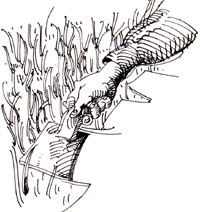
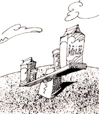

If you'd like our panel of consultants to answer a question concerning some aspect of self-reliant living that has you stumped, send it to Ask Our Experts, MOTHER EARTH NEWS, P. O.Box 70, Hendersonville, NC 28793. The most frequently asked questions will be answered here-and hereonly-so that we can all benefit from what these folks have to say.
Grubby Lawn?
My problem is grubs.
When I bought my home four years ago, I also bought the best-looking lawn on the block. The previous owners, a retired couple, had worked that yard all day every day. I decided to make it even better, so I sprinkled some compost from my back yard pile (one cubic foot of leaves and table scraps) on the less luxuriant places.
The next year, brown spots appeared where I had applied the compost. Although I saw no grubs, I figured that's what it had to be, so I sprayed the areas with nicotine. To no avail: The compost-treated grass finally died completely.
The next year, the brown spots appeared again. Again, nicotine didn't faze the grubs.
Last year I reseeded my lawn. It was beautiful-until July, when (you guessed it) the same brown spots showed up.
This year I'm considering cementing in the entire yard and having the best-looking patio on the block. Before I do, any ideas? I can't see it being lack of water; I water almost every day.
It sounds to me as if your problem is not grubs but disease. Here's how you can tell: Grubs chew off the grass roots, so if the pests have been at your lawn, you should easily be able to lift patches of dead grass off the soil. If the dead grass is still tightly rooted, chances are you've got one or more of the warm-season turf diseases. These are in the soil year-round, but they're most obvious during hot, humid periods.
It's interesting to speculate why the problem occurred when and where it did. I suspect that the previous owners used lots of chemicals, and when you cut back, your lawn went through a withdrawal stage, during which it was weakened and susceptible to diseases. It's also possible that your compost pile-which is extremely small-didn't "cook" hot enough, so that diseases in incompletely composted matter transferred themselves to your lawn.
I'd recommend several things. First, get a sample of your dead turf-preferably near the outer edge where you can also get some healthy grassand take it to your county agricultural extension agent. He or she will send the sample to Cornell University for identification of the exact disease and a recommended cure. Second, reseed the damaged areas with a disease-tolerant turf grass variety appropriate for your area, and apply a low-nitrogen organic fertilizer in June. Finally, I'd suggest you replace the daily sprinklings with deep, weekly waterings.
Richard C. Fry is a horticulturist with the Parks Department in Transylvania County in North Carolina.
No Perfect Poletice
We're planning to build pole structures on our land but aren't sure what sort of wood to use. We'd considered using commercial pressure-treated poles, but the preservative in them contains copper, chrome and arsenic. Is it environmentally safe to use this kind of wood for poles that will be buried in the ground? If not, what sort of safe alternatives are there?
Chromated copper arsenate (often labeled CCA) is one of the more benign commercial treatments used to make rot-prone wood more resistant. You should use it in preference to wood treated with pentachlorophenol, ammoniacal copper arsenate (ACA) or creosote. Your only good alternative to wood treated with CCA is to use a naturally rot-resistant wood such as black locust, cedar, cypress or one of several others. All of these will be more expensive than treated softwood and many may not last as long.
Little of the treatment chemical should leach into the ground from the wood. The main health hazards come from handling the timbers or burning the scraps. Therefore, wear gloves when you place the poles, and dispose of the scraps in a landfill.
When you purchase the poles, make sure they're approved for contact with the ground. This is often called double-treated lumber.
David Schoonmaker is a technical editor for
Mother Earth News.
I'd like to cut down on the amount of fat in my diet-in dairy products, for example, which I use a lot of-but I'm not crazy about skim milk. It tastes even thinner than I want to look. How about 2%-fat milk instead? What possible difference could two paltry percentage points make?
Quite a bit. The labels on milk cartonscan be confusing, even though they're accurate. Whole milk is only about 3% butterfat. So 2% milk has had a third of its fat removed-not 98%, as many people believe. While a 30% reduction in fat is not to be sneezed at, 2% milk doesn't provide the spectacular savings most people assume it does. Approximate calories per cup: skim milk, 90; 1%, 110; 2%, 130; whole, 150.
There are other ways to reduce the dairy fat in your diet. Try replacing evaporated milk with evaporated skim milk; the substitution is undetectable in most recipes. Instead of ice cream, treat yourself to frozen yogurt, a delicious and increasingly popular product. Skim or low-fat yogurt can substitute for sour cream.That can take some getting used to: I'd suggest you start out by using yogurt in recipes that have other strong flavors.
-Carol Taylor
Carol Taylor is an associate editor forMother Earth News.
|
 ILLUSTRATIONS BY YVONNE BUCHANAN |
 |
|